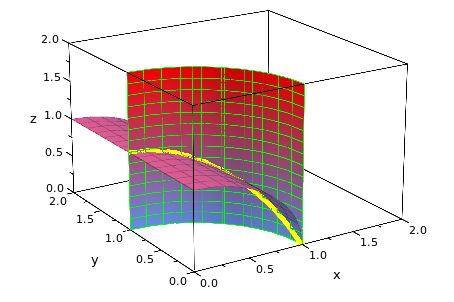

h:=plot::Cylindrical([2*sin(phi), phi, r],r=0..2, phi = 0..PI/2,LineColor = RGB::Blue)
h0:=plot::Spherical([2, u, v], u = 0..PI/2, v = 0..PI/2,LineColor = RGB::Red)
c0:=plot::Curve3d([sqrt(2*t-t^2),t,sqrt(4-2*t)], t = 0..2,LineColor = RGB::Green,LineWidth =2)
plot(h,h0,c0)
h1:=plot::Implicit3d(x^2+y^2-1,x=0..2,y=0..2,z=0..2,LineColor = RGB::Green)
h2:=plot::Implicit3d(x^2+z^2-1,x=0..2,y=0..2,z=0..2)
c2:=plot::Curve3d([t,sqrt(1-t^2),sqrt(1-t^2)], t = 0..1,LineColor = RGB::Yellow,LineWidth =2)
Curve of Intersection
plot(h2,h1,c2)

cr:=plot::Curve3d([t,0,0], t = 0..2,LineColor = RGB::Green,LineWidth =2)
s:= plot::Surface([t, t*cos(u), t*sin(u)], t = 0 .. 2, u = 0 ..2*PI)
plot(cr,s)
f := u -> u:
plot(plot::Surface([u, f(u)*sin(v), f(u)*cos(v)], u = 0 .. 2,
v = 0 ..a*2*PI, a = 0 .. 1)):
h3:=plot::Function3d(x^2,x=0..1,y=0..1,z=0..1,LineColor = RGB::Green)
h4:=plot::Implicit3d(z-1+3*x^2+y^2,x=0..2,y=0..2,z=0..2)
c3:=plot::Curve3d([t,sqrt(1-4*t^2),t^2], t = 0..4,LineColor = RGB::Yellow,LineWidth =2)
plot(h4,h3,c3)
plot(plot::Surface([(5+2*cos(v))*sin(u), (5+2*cos(v))*cos(u), 2*sin(v)], u = 0 .. a*2*PI,
v = 0 .. 2*PI, a = 0 .. 1)):